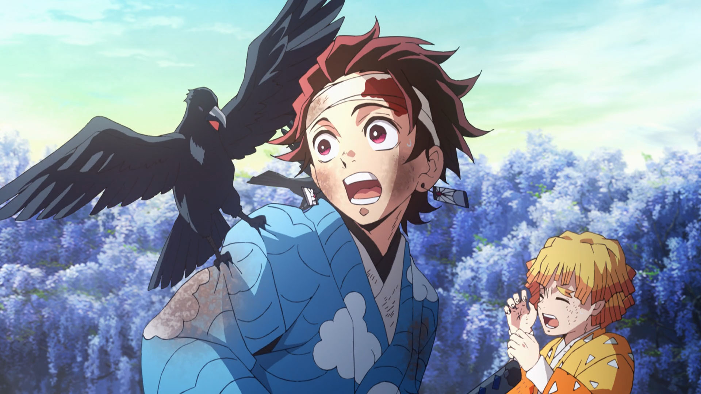

Demon SlayerS1

Kiadás: 2019-04-06
Tipus: Sorozat
Forditó: Naruto-Kun
Részek: 26/26
Státusz: Befejezett
Leírás
A Demon Slayer (Kimetsu no Yaiba) egy népszerű japán anime és manga sorozat, amely Tanjiro Kamado történetét követi. Miután családját démonok megölik, Tanjiro démonvadásszá válik, hogy megmentse húgát, Nezukót, aki félig démonná változott. A történetben Tanjiro harcba száll a démonokkal, miközben igyekszik megtalálni a módját, hogy visszaadja Nezuko emberi formáját. A sorozat híres az érzelmekkel teli karakterfejlődésről és a látványos harci jelenetekről.
Részek
- 1. Rész
- 2. Rész
- 3. Rész
- 4. Rész
-  5. Rész
- 6. Rész
- 7. Rész
- 8. Rész
- 9. Rész
- 10. Rész
-
 11. Rész
11. Rész - 12. Rész
- 13. Rész
- 14. Rész
- 15. Rész
- 16. Rész
- 17. Rész
- 18. Rész
- 19. Rész
- 20. Rész
- 21. Rész
- 22. Rész
- 23. Rész
- 24. Rész
- 25. Rész
- 26. Rész